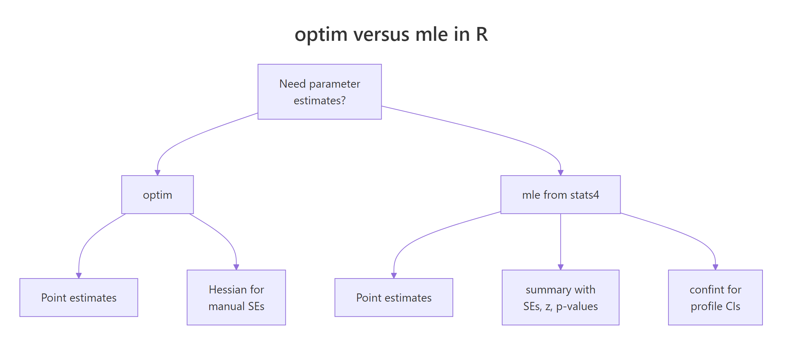
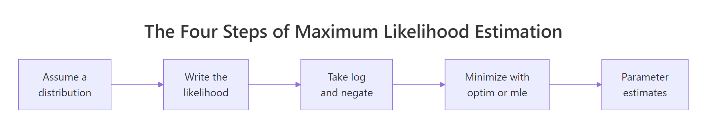

Maximum Likelihood Estimation in R: Build Genuine Intuition, Then Fit Real Models
Maximum likelihood estimation (MLE) picks the parameter values that make your observed data most probable under an assumed distribution. In R, you write a log-likelihood function, then let optim() or stats4::mle() search the parameter space for the best fit.
What does maximum likelihood actually mean?
Suppose you have 200 exam scores and you believe they come from a normal distribution, but you don't know the mean or standard deviation. MLE asks a simple question: of all possible (μ, σ) pairs, which one makes this exact dataset the most probable outcome? The answer is the MLE. Below, we simulate data from a known normal and recover the parameters with optim() — so you can see the recipe produce the right answer.
The function below computes the negative log-likelihood of the normal distribution given a candidate parameter vector. optim() then searches for the vector that minimizes it. Because minimizing the negative is the same as maximizing the positive, the result is the MLE.
The optimizer started at (50, 5) — far from the truth — and climbed the likelihood surface until it landed at (65.15, 11.80). That is extremely close to the true (65, 12) used to generate the data. The leftover gap is sampling noise, not a flaw in the method. Increase n to 10,000 and the estimates will crawl even closer.
Now let's sanity-check. For a normal distribution, the MLE has a closed-form solution: the sample mean for μ and the sample standard deviation (with division by n, not n−1) for σ. The optimizer should match that closed form.
The numbers match fit_norm$par to four decimals. That's not a coincidence — it's a proof that the MLE recipe, when applied to the normal, recovers exactly the formula you already knew. The optimizer reached the same point that calculus gives you on paper, but it works even when calculus doesn't.
Try it: Fit a normal distribution to R's built-in precip dataset (annual rainfall for 70 US cities) using optim(). Report the estimated mean and sd.
Click to reveal solution
Explanation: The recipe is identical to the simulated-data case — swap norm_data for precip. The estimated mean matches mean(precip) and the estimated sd matches the population-formula sd.
Why do we maximize the log instead of the raw likelihood?
The likelihood of a sample is the product of each point's density:
$$L(\theta \mid x) = \prod_{i=1}^{n} f(x_i \mid \theta)$$
With even a few hundred observations, that product becomes astronomically small — often smaller than the smallest number your computer can represent. The fix is to maximize the sum of log densities instead, which is mathematically equivalent (log is monotonic) but numerically stable:
$$\ell(\theta \mid x) = \sum_{i=1}^{n} \log f(x_i \mid \theta)$$
Let's see the underflow in action on our existing norm_data. We'll compute the raw product of densities and then the sum of log densities, at the true parameters.
The raw product underflowed to exactly zero. Every numeric optimizer you try will be stuck — it cannot tell a "good" θ from a "bad" θ when both give zero. The log-likelihood, by contrast, is a finite -785.8 and changes smoothly as parameters move, which is exactly what an optimizer needs.
Because optimizers like optim() minimize by default, we always write the negative log-likelihood and minimize it. To visualize what the optimizer is climbing, let's compute the log-likelihood on a grid of μ values (holding σ fixed at its estimate) and plot the curve.
The curve is smoothly concave, peaking at the MLE. The dashed vertical line marks where optim() landed. That smoothness is the whole reason MLE works in practice — an optimizer needs a gradient to follow, and log-likelihoods almost always deliver one.
optim() and nlm() are minimizers; dnorm(), dpois(), dgamma(), and all dxxx() functions accept log = TRUE which gives you the log density without manually wrapping in log().Try it: Evaluate the log-likelihood of the normal at μ=65, σ=12 for norm_data. Confirm it equals roughly -785.8.
Click to reveal solution
Explanation: sum(dnorm(..., log = TRUE)) is the canonical way to compute a log-likelihood in R for any continuous distribution.
How do you fit any distribution with optim()?
The power of the MLE recipe is that it generalizes. Only the density function changes. Let's simulate Poisson count data (the number of emails per hour, say, with true rate λ = 4.3) and fit λ with optim().
We switched to L-BFGS-B because λ must stay positive — that method lets you declare lower = 1e-6 so the optimizer never wanders into negative territory. Starting from λ = 1, optim() climbed to λ = 4.316. The true value was 4.3, and the Poisson's analytical MLE is the sample mean, so let's confirm.
Identical to three decimals. Every distribution with a dxxx() in R can be fit this way: exponential (dexp), gamma (dgamma), beta (dbeta), Weibull (dweibull), lognormal (dlnorm). The only thing that changes is which density you plug in.
method = "Nelder-Mead" happily walks into invalid regions and returns NaN. Use method = "L-BFGS-B" with explicit lower (and upper) bounds when parameters have natural limits.Try it: Simulate rexp(500, rate = 2) and recover the rate with optim(). The analytical MLE is 1 / mean(x).
Click to reveal solution
Explanation: Swap dpois() for dexp(). The closed form 1 / mean(ex_exp_data) gives an identical answer.
What does stats4::mle() give you that optim() doesn't?
optim() returns point estimates and stops. In practice you also need standard errors, z-statistics, p-values, and confidence intervals. stats4::mle() wraps optim() and computes all of that for you by inverting the Hessian at the MLE.

Figure 1: optim() returns estimates; stats4::mle() additionally gives SEs, p-values, and confidence intervals.
Here's the same Poisson fit from the previous section, now routed through mle(). Note the named-argument convention: the first function argument is the parameter being estimated, and start is a named list.
summary() shows the estimate plus its standard error — the typical spread of the estimator under resampling. For a 95% profile-likelihood confidence interval (usually more accurate than the Wald SE interval), call confint():
The true λ = 4.3 lies comfortably inside [4.14, 4.50]. You did not have to compute the Hessian, invert it, or take square roots — mle() did it all.
If you prefer to stay with optim(), you can recover the same SE manually by asking for the Hessian and inverting it. The Hessian of the negative log-likelihood is the observed Fisher information, and its inverse is the estimator's covariance matrix.
Same SE as mle() returned. Use whichever interface you prefer — mle() is cleaner for reports, optim() + hessian is more flexible when your likelihood doesn't fit into mle()'s argument convention.
function(params) and indexing params[1] — which is fine for optim() — will fail with mle(). Either refactor to function(lambda = 1) or stick with optim(..., hessian = TRUE).Try it: Using fit_pois_mle, call confint(fit_pois_mle, level = 0.90) for a 90% interval. Explain in one sentence why it is narrower than the 95% interval.
Click to reveal solution
Explanation: A 90% CI requires less certainty than 95%, so we shave probability from both tails — the interval contracts.
How do you write a custom likelihood function?
When no built-in density quite matches your model — Weibull for failure times, a mixture for bimodal data, a truncated distribution — you write the likelihood yourself. As long as you can evaluate the density (or probability mass) of each observation, MLE works.
Let's fit a Weibull to simulated failure times. The Weibull has two parameters, shape and scale, both positive. We will overlay the fitted density on a histogram to visually confirm the fit.
The estimates are right on top of the true (1.8, 100). Now let's plot the fitted density (black curve) against the histogram of the data (gray bars) to confirm the visual fit.
The fitted curve hugs the histogram's shape — unimodal, right-skewed, tapering to zero past 250. That visual agreement is a practical model-check: if the curve misses the data's shape, your distributional assumption is wrong, no matter how well the numerical fit converged.
optim() or mle() — does not care whether the model is a standard distribution, a mixture, a regression, or a bespoke density you invented for your domain.Try it: Re-fit wb_data as if it were Gamma-distributed (using dgamma with shape and rate). Inspect the resulting fit.
Click to reveal solution
Explanation: MLE always returns something — even when the distributional assumption is wrong. That's why visual fit checks (histogram overlay) matter: they flag misspecification that the likelihood number alone can't.
Practice Exercises
Exercise 1: Fit a negative binomial to overdispersed counts
Simulate 500 negative-binomial counts with rnbinom(500, size = 3, mu = 8), write the negative log-likelihood using dnbinom(..., log = TRUE), and recover both size and mu with optim(). Use L-BFGS-B and keep both parameters strictly positive. Save the result to my_nb_fit.
Click to reveal solution
Explanation: The recipe is identical — swap in dnbinom(). The negative binomial has two parameters, so par is a length-2 vector and lower has two entries.
Exercise 2: Estimate a 2-component normal mixture
Simulate bimodal data and fit a mixture of two normals by hand. The mixture density is w * dnorm(x, mu1, s1) + (1 - w) * dnorm(x, mu2, s2) with mixing weight w in (0, 1). Write the negative log-likelihood for this density and estimate (w, mu1, s1, mu2, s2) with optim(). Save to my_mix_fit.
Click to reveal solution
Explanation: The mixture density is a weighted sum, so you cannot use log = TRUE inside the individual dnorm() calls — take the log of the whole sum instead. The weight w needed explicit [0.01, 0.99] bounds; the means got wide bounds; the sds stayed strictly positive. The recovered estimates are close to the true (0.6, -2, 1, 3, 1.5).
Complete Example: MLE for insurance claim severity
A common actuarial task is modeling claim sizes as a Gamma distribution. We will simulate claim data, fit a Gamma via stats4::mle(), inspect standard errors and profile-likelihood confidence intervals, and finally overlay the fitted density on the data to check the fit visually.
The data spans roughly 0 to 18,000 with a median around 3,300 — right-skewed, as claims typically are. Now the Gamma MLE. Gamma has two positive parameters, and dgamma() takes shape and rate (rate = 1 / scale), so we fit on the rate parameterization.
The true parameters were shape = 2.5 and rate = 1/1500 ≈ 0.000667 — both are recovered within one standard error. Profile-likelihood CIs for both:
Both intervals comfortably contain the truth. Finally, overlay the fitted Gamma density on the histogram as a model-check.
The curve follows the histogram's peak near 2,000 and tails off gradually past 10,000 — the defining behavior of a Gamma. If your real claim data deviated (heavy extreme tails, extra bump at zero), the curve would miss those features and you'd reach for a heavier-tailed or zero-inflated alternative.
Summary

Figure 2: The four-step MLE recipe used throughout this tutorial.
- MLE picks the parameters that make your observed data most probable under an assumed distribution.
- Always work with the negative log-likelihood;
optim()minimizes it by default and avoids numerical underflow. - Use
dxxx(..., log = TRUE)instead oflog(dxxx(...))— it's faster and more stable. stats4::mle()wrapsoptim()and gives yousummary()(SEs, p-values) andconfint()(profile CIs) for free.- For constrained parameters (positive rate, positive scale, probability in [0,1]), switch to
method = "L-BFGS-B"and setlower/upper. - Any density you can write in R is MLE-ready — mixtures, truncated distributions, bespoke regression likelihoods all follow the same recipe.
References
- Myung, I. J. (2003). Tutorial on maximum likelihood estimation. Journal of Mathematical Psychology, 47(1), 90-100. Link00028-7)
- R Core Team —
stats4::mle()reference. Link - R Core Team —
optim()reference. Link - Wasserman, L. (2004). All of Statistics. Springer. Chapter 9: Parametric Inference.
- Pawitan, Y. (2001). In All Likelihood: Statistical Modelling and Inference Using Likelihood. Oxford University Press.
- Venables, W. N. & Ripley, B. D. (2002). Modern Applied Statistics with S, 4th ed. Springer. Chapter 16: Optimization and Maximum Likelihood Estimation.
- Bolker, B. (2008). Ecological Models and Data in R. Princeton University Press. Chapter 6: Likelihood and all that. Link
- Nash, J. C. (2014). Nonlinear Parameter Optimization Using R Tools. Wiley. Chapter on likelihood-based optimization.
Continue Learning
- Linear Regression — how MLE under normal errors reduces to ordinary least squares.
- Logistic Regression With R — MLE applied to binary outcomes via the Bernoulli log-likelihood.
- Generalized Linear Models — the GLM framework that wraps MLE for a broad family of exponential-family distributions.